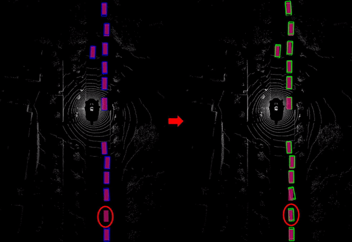
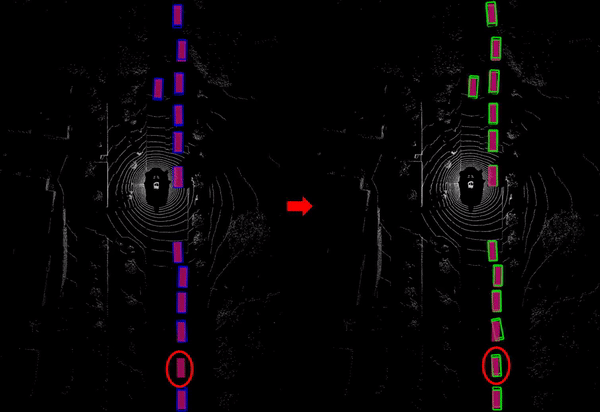

關於
我是廖偉翔，我畢業於國立陽明交通大學人工智慧技術與應用碩士學位學程。研究項目主要專注於自駕車、光達、深度學習和機器人，並且將我的研究結果投稿到國際頂尖的機器人研討會也被接受並發表 (IEEE International Conference on Robotics and Automation)。我是個對寫程式和研究演算法充滿熱情的人，程式語言當中，對於C/C++和Python有著高度的熟練與經驗。除了能運用所學獨立作業之外，我也喜歡與團隊夥伴討論並激盪出最佳的解法去解決問題。在學習方面，我也有著大量的課程經驗，包括深度學習、影像處理、電腦視覺、機器人和電機相關基本知識。在實作方面，我喜歡將一個專案分成短程、中程、長程，並一步一步的達成目標。
工作之餘，我熱愛運動，例如:健身、跑步、游泳。也熱愛與三五好友出遊放鬆身心。
技能
C/C++
Python
Shell
Others
Linux
Robot Operating System (ROS)
Git
Pytorch

出版物
Reconstruction and Synthesis of Lidar Point Clouds of Spray
近年來自動駕駛汽車的相關技術發展快速。光達作為大量被應用於自駕車感知系統
中的傳感器之一，其表現與效能會顯著地受惡劣氣候影響。目前已經有許多分析與改
善光達在降雨與雪霧之中表現的相關研究，然而對於在路面積水的情況下高速行駛的
車輛產生的水花噴濺則較無著墨。車輛噴濺出的水花會造成自駕車感知系統的誤判。
為了評估光達感知系統的表現以及訓練建立於深度學習模型之上的感知系統，需要大
量包含在不同氣候條件下收集的資料。然而收集相關資料相當困難，除了需要特定的
氣候狀況(如大雨) 之外，車輛也需要達到足夠高的速度才會噴濺出水花。本研究提出
第一個重建與合成水花資料模擬方法，透過少量的水花資料便可以產生大量的合成水
花資料。我們提出的模擬流程可以被應用於資料擴充，以對既有的良好氣候下的光達
資料加入模擬的水花效果。我們進一步比較有無加入擴充資料進行訓練的車輛偵測模
型的表現。加入擴充資料訓練的模型在處理受水花影響的真實光達點雲資料時表現有
顯著的提升。

GNN-based Point Cloud Maps Feature Extraction and Residual Feature Fusion for 3D Object Detection (碩士論文)
光達感測器在近年來已被廣泛地使用於自駕車，相較於相機，光達提供了更加精確且立體的幾何資訊。基於上述光達感測器的優勢，近期的研究發展出了多種基於光達感測器的物件偵測方法。然而，因為光達的特性，遠距離的物體常常只含有少數的點雲，這將使得物體難以被偵測。另一方面，光達提供的點雲是稀疏的資料，因此一些常出現於不可行駛區域且相似於目標物的點雲群，像是建築物、轉角、灌木叢等等，容易被判別為目標物，而出現偽陽性的結果。為了解決上述提到的問題，我們提出結合點雲地圖與光達物件偵測模型，並使用圖神經網路提取出環境資訊以改善光達物件偵測在遠距離和偽陽性的表現。最後我們在 NuScenes資料集下評估我們提出的方法。對於遠距離物體，在距離40到50公尺的較遠距離物體有24.78%的平均精準度提升；對於偽陽性，整體精確率有4.22%的提升。
 
